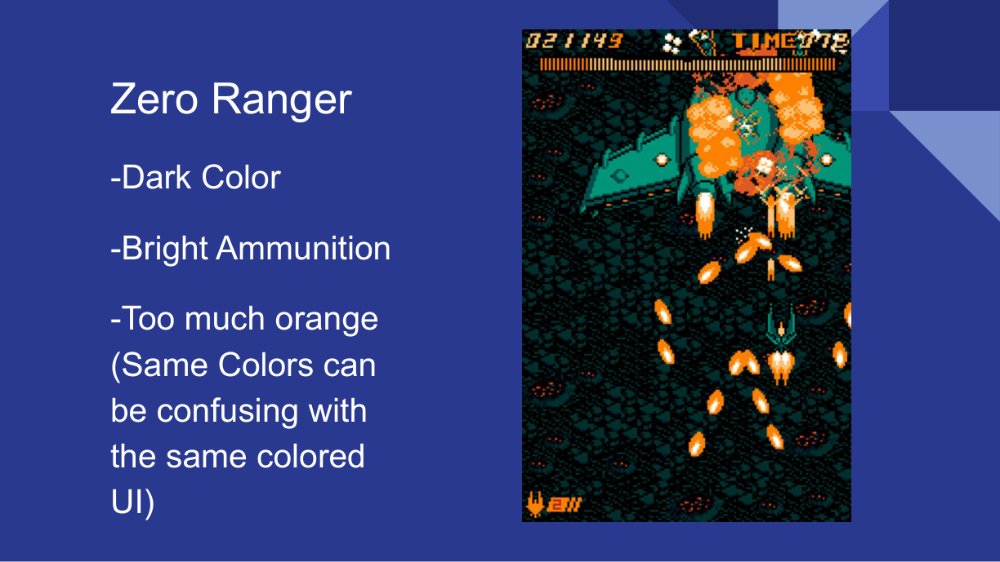
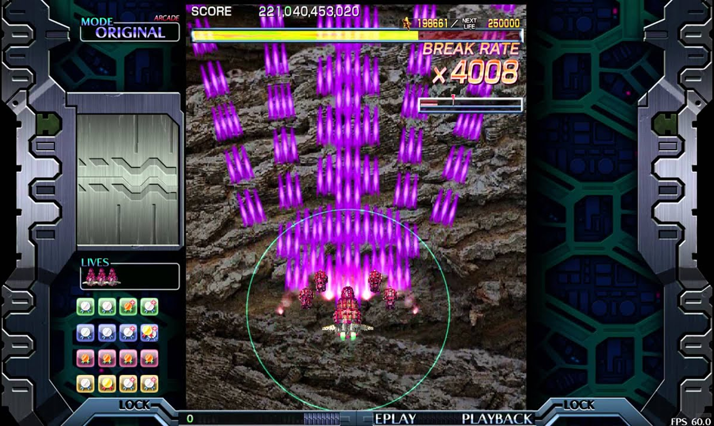
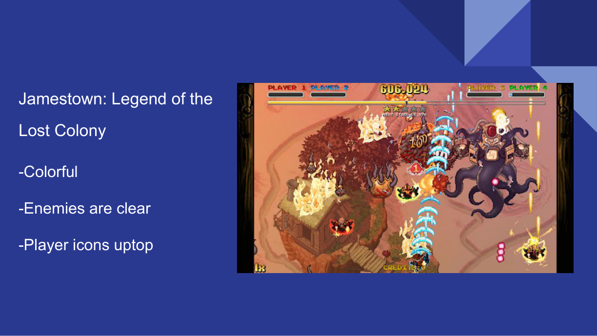
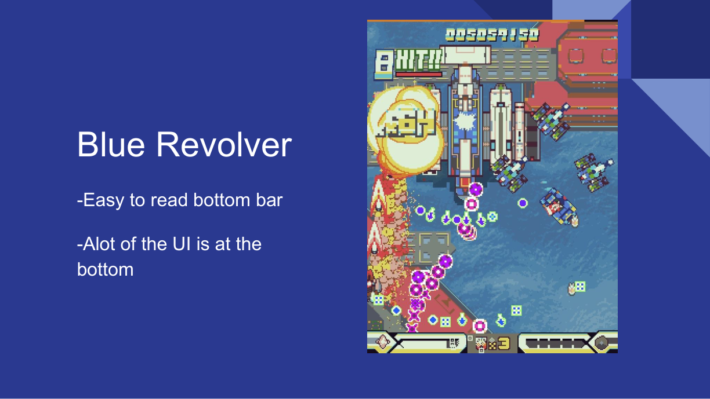
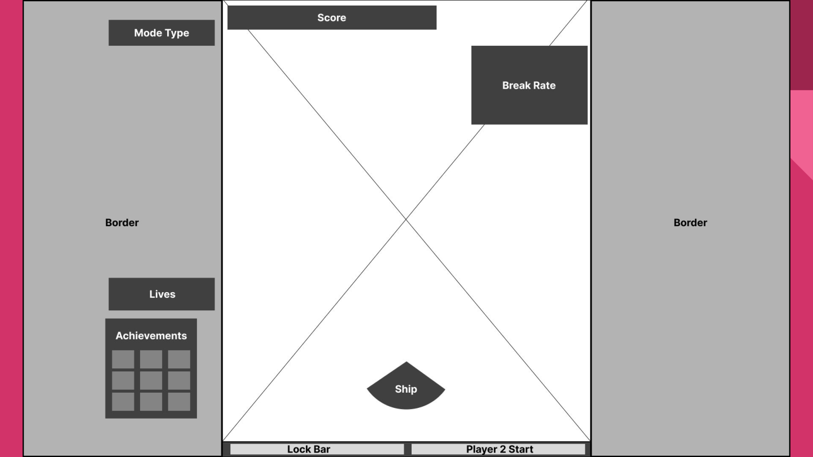
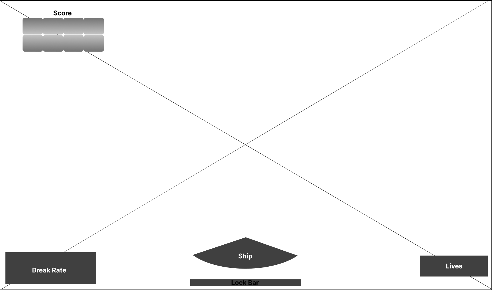
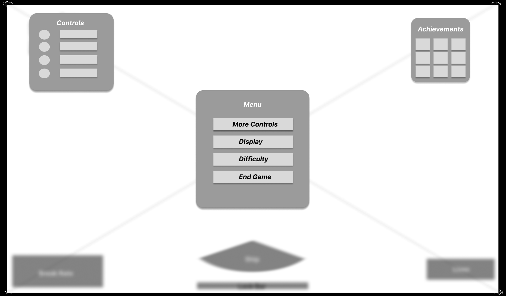
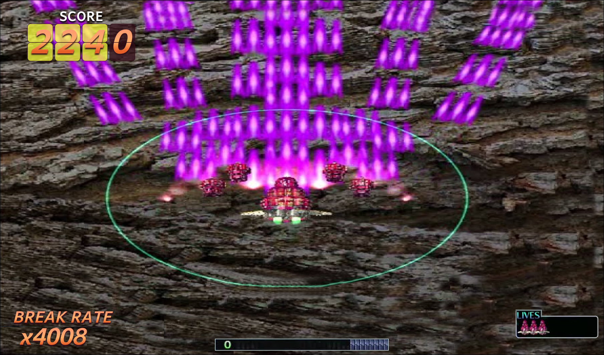
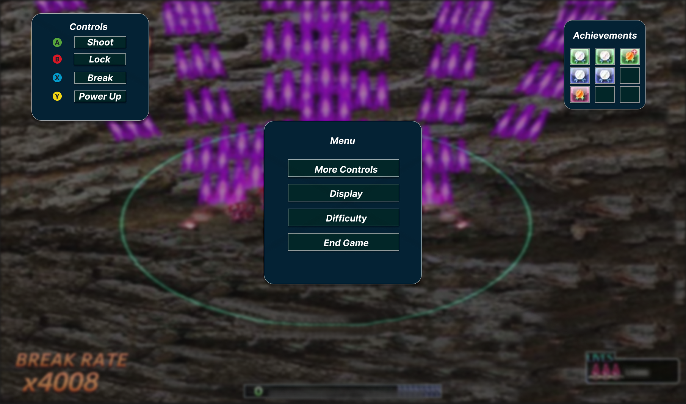

ZeroRanger
Its dark backdrop and bright projectiles create contrast, but a strong concentration of orange suggested a risk of blending gameplay elements with the UI.
Reimagining a fast-paced arcade shooter's heads-up display for widescreen play—making essential information easier to locate without taking attention away from the action.

Crimson Clover is a bullet-hell arcade shooter where players track projectiles, enemies, their ship, and performance information simultaneously. In the original presentation, the redesign brief called for a widescreen layout, more intentional HUD placement, a visually distinctive score counter, button prompts, and better visibility of enemies during play.
Explore a wider presentation while preserving enough room for the gameplay itself.
Make score, lives, break rate, and the lock meter easy to locate at a glance.
Introduce clear button prompts and a pause-menu structure for controls and settings.
I compared three games in the genre to understand how color, contrast, and information placement affect readability during intense gameplay. Rather than copying a single interface, I used these observations to guide the Crimson Clover redesign.

Its dark backdrop and bright projectiles create contrast, but a strong concentration of orange suggested a risk of blending gameplay elements with the UI.

The colorful action and identifiable enemies provided a reference for distinguishing active gameplay from supporting information.

Its readable bottom status bar showed how useful information can be grouped along an edge of the screen.
These are qualitative observations from my competitive audit, not results from a controlled comparative study.
I first documented the game's existing layout, where a narrow central playfield sits between wide side panels and key indicators are spread across different areas. I then created two updated low-fidelity wireframes: one for active gameplay and another for the pause-menu state.

The updated HUD explores a wider play area with the score in the upper-left corner, break rate at the lower left, lives at the lower right, and the lock bar near the bottom center. The intent is to make essential information easy to locate while keeping the middle of the screen focused on gameplay.

For the pause state, I explored a central menu with options for controls, display, difficulty, and ending the game. A controls guide appears on the left, while achievements are grouped on the right. The gameplay behind the menu is subdued so the overlay becomes the focus.

In the final gameplay mockup, I expanded the visible play area and distributed the HUD around its edges. The score receives a bold, arcade-inspired numeric treatment; the break-rate multiplier is anchored at the lower left; lives remain visible at the lower right; and the lock meter stays centered near the bottom.

Separating score, break rate, and lives into distinct corners creates a more predictable hierarchy for quick checks during play.
The redesign retains bright, energetic visual styling while reconsidering where information belongs on a wider screen.
The pause-menu concept dims the action and introduces three clear zones: a controls legend on the left, a focused menu in the center, and an achievements panel on the right. The central options include More Controls, Display, Difficulty, and End Game.

I collected qualitative feedback using five questions about the game type, score placement, lives indicator, controls, and suggested improvements. The recorded responses highlighted both promising decisions and areas that would benefit from another iteration.
The respondent identified the lives indicator in the lower corner and considered it a convenient place to glance. They also described the controls legend as clear.
The respondent could not easily interpret the achievement icons and suggested adding a way to change control mappings. They also questioned how the score display would accommodate larger numbers.
This project reinforced that game UI needs to work alongside the player's immediate task. A visually appealing HUD is only successful if players can read essential information without losing track of the action. My redesign explored a clearer hierarchy, a widescreen composition, and more accessible controls information.
Add labels or tooltips so unfamiliar players understand what each icon represents.
Develop a dedicated control-customization flow rather than relying only on a static legend.
Validate score overflow, contrast, enemy visibility, and glanceability during active gameplay with more players.